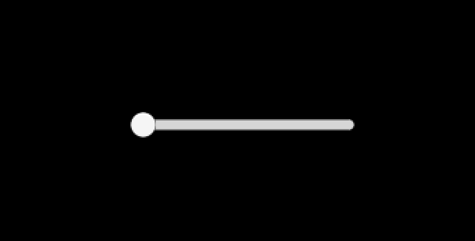
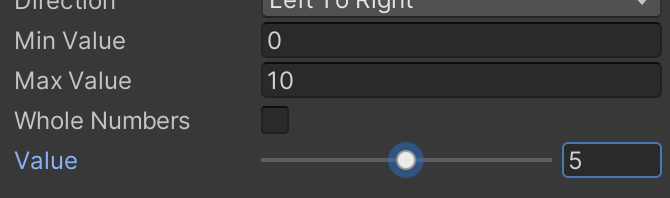
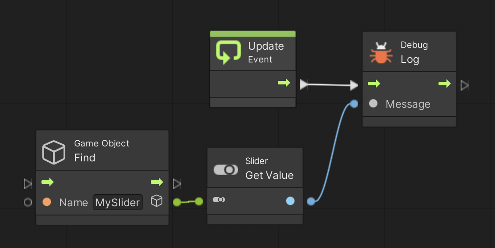
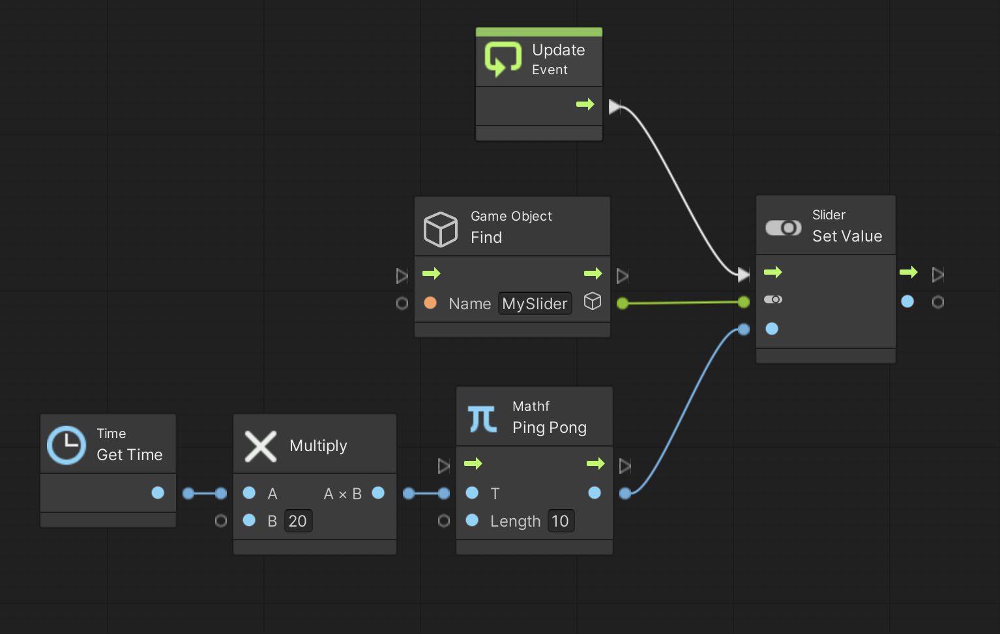

ここではスライダーを使って値を取得したりセットしたりしてみます。
演習を行う前に準備をしましょう。
アセットフォルダの Scenes フォルダの中にシーンを新規作成し、シーン名を「Slider Scene」にする。背景色は任意で構わない
新規作成したシーンへ移動する
ヒエラルキー右クリック → Create Empty で GameObject というゲームオブジェクトを新規作成し、名前を「PROGRAM」にする (Position は適当で良いです)
次にこちらを参考にして Visual Scripting のセットアップもします。
Scripts フォルダの中に入り、空いている部分を右クリックしてメニューを表示し、Create → Visual Scripting → Script Graph を選ぶ
Scripts フォルダ内に「New Script Graph」というアセットが出来るので「Slider Script」に名前を変更する
PROGRAM に Script Machine コンポーネントをアタッチする
Script Machine の Graph の None と書いてあるセルに Slider Script をドロップする
スライダーも Unity UI の一種で、スライドを表示して値を取得します。
では早速以下の手順でスライダを作成してみましょう。
ヒエラルキー右クリック → UI → Slider を選択すると Canvas というフォルダと Slider というゲームオブジェクトが出来る。
Slider を MySlider に名前を変更する
ここまでで図 1 の様なスライダーが画面上に出ていると思います。
図1. スライダー

なお座標はテキストの時の様にRect Transform コンポーネントを使って位置を変更します。
また色や形なども調整可能ですのでネットで調べて色々試して下さい。
さてスライダーの範囲や初期値はスライダーの中にある Slider コンポーネントの Min Value、Max Value、Value で調整可能です(図2)。
今回は最小値 0、最大値10、初期値 5 として下さい。
図2. 範囲、初期値を最小値 0、最大値10、初期値 5 にする

スクリプトからスライダーの値を取得するには Slider Get Value ユニットを使います。
例えば図 3 を実行すると現在値がログに表示されます。
なお文字列表示の時と同様に Game Object Find ユニットを使って MySlider を検索する必要があります。
図3. 現在値の取得

逆にスクリプトからスライダーの値をセットするには Slider Set Value ユニットを使います。
例えば図 4 を実行するとスライダーが左右に移動します。
なお Mathf Ping Pong ユニットは時間毎に 0 〜 Length までの数字を増減させるユニットで、Time Get Time ユニットなどと組み合わせて使います。
図4. 値のセット
